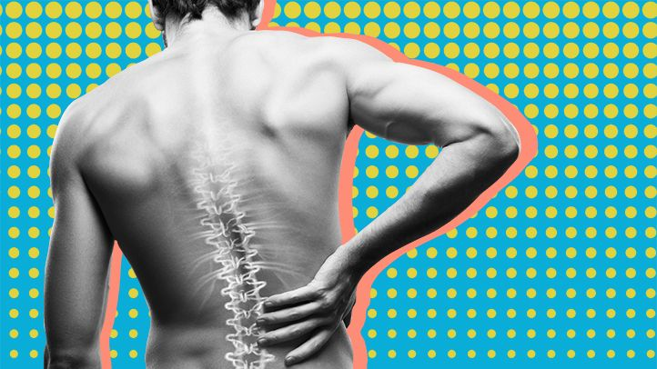

Spondyloarthritis

CAUSES
The exact cause of spondyloarthritis isn’t clear, although genetics play a part.
SYMPTOMS
The main symptoms of spondyloarthritis are pain, stiffness, and swelling. Bone damage may also occur. Where you feel symptoms in the body depends on the type of spondyloarthritis you have.
- AS pain often starts in the buttocks and lower back. It may spread to the chest and neck. Tendons and ligaments may also be involved. In rare cases, AS will impact the heart and lungs.
-
Enteropathic arthritis may cause pain in the spine, arms, and leg joints. It may also cause bloody diarrhea and abdominal pain due to inflammatory bowel disease.
Juvenile arthritis often causes pain in the pelvis, hips, ankles, and knees. The condition may also cause fatigue.
-
Psoriatic arthritis can impact the spine. When this happens, it’s known as psoriatic spondyloarthritis. It may also cause pain in the neck.
-
Reactive arthritis may cause inflammation in the urinary tract, the joints, and the eyes. It can lead to inflammation of the spinal joints.
-
Undifferentiated arthritis often causes symptoms similar to AS. This includes pain in the lower back, buttocks, and heels.
DIAGNOSIS
Early diagnosis is important to help manage symptoms and reduce your risk for complications or disability. Your doctor may suspect you have spondyloarthritis based on your symptoms, medical history, and a medical exam.
The condition may be confirmed with:
- X-rays of the sacroiliac joints in the pelvis
-
magnetic resonance imaging
-
a blood test to check for the HLA-B27 gene
TREATMENTS
Treatment plans are individualized, but most will include:
- physical therapy
-
low-impact exercise
-
nonsteroidal anti-inflammatory drugs
-
corticosteroid injections
-
antirheumatic drugs
-
TNF alpha-blocker drugs